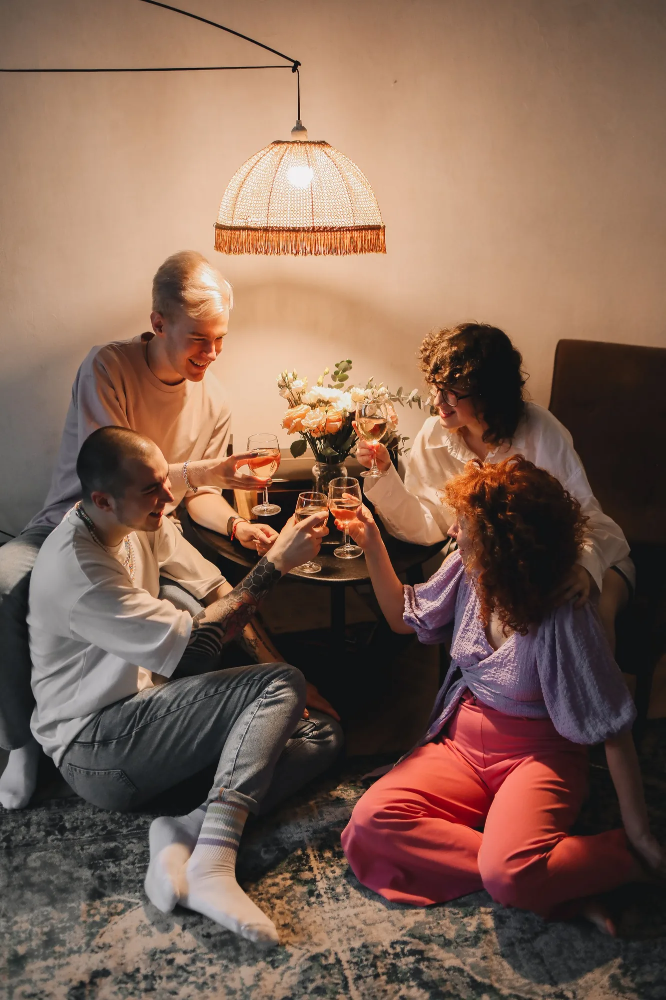

GossipMar 14, 2026
They Sold the Afters
Dice listed an afters. Twenty-five at the door of a kitchen. The pin used to be the ticket.
1:12 in the group chat and somebody sent a Dice link and called it the afters. Not a pin. Not a name. A checkout. Twenty-five plus fees to stand in a kitchen that used to be free if you knew who had the aux. I screenshotted it like it was a joke. It wasn’t. Two hundred tickets. Comments off.
This is the same city that spent two years telling you the club photo was a lie and the night started when somebody put a record on. Now the record has a SKU. Promoters learned they could sell the hour after the hour. Official afters. Brand afters. An afters with a wristband, which is just a club that doesn’t want to say club. 1999 this was a house with a folding table. 2004 it was a loft and a guy at the door who knew your face. 2026 it is a blue button that says Get Tickets.
I don’t mind paying a DJ. I mind the fiction. The afters were the part the brochure couldn’t bill. That’s why they worked. You could still change your mind. You could still be in socks. You could still put Sade on without a production manager asking you to post the story. A cover at the kitchen is not a scene protecting itself. It’s a scene that ran out of rooms and started selling the hallway.
If your night needs a QR code after two, it isn’t afters. It’s a second door. Send the pin anyway. Keep one kitchen that doesn’t have a link. That’s the whole religion. The rest is a club with better lighting in the listing photo.